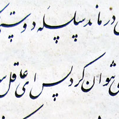

الخطَّاط
:الفكرة
يقوم هذا النموذج بالتعرف على الخطوط العربية، تحديداً خطي النستعليق (الفارسي) والرقعة.
فيما يلي تجربة حية للنموذج باستخدام Tensorflow.js. لاختبار النموذج، يمكنك: 1) توليد الصور مباشرة، 2)
رفع صورة، أو 3) الاختبار على عينات من الصور.
ملاحظة: ليعمل النموذج، يلزم تنزيل 1.99 ميغابايت من البيانات.
معاينة
التوقع
-
تعذر تحميل الخطوط
1. توليد الصور
ادخل النص المطلوب في مربع النص التالي، ثم اختياريًا، انقر فوق توليد لجعل الكتابة تبدو حقيقة. سيتم معاينة الصورة المولدة في الإطار على اليمين. انقر على الزر "توقع" عند الانتهاء.2. رفع صورة
حجم الصورة المتوقع 100×100 بكسل، سيتم تغيير حجم الصور الأكبر/الأصغر من ذلك بما يتناسب.3. الاختبار على عينات من الصور
انقر على الصورة للتنبؤ. يشير النص أسفل كل صورة إلى نوع الخط المستخدم.
نستعليق (فارسي)
نستعليق (فارسي)
نستعليق (فارسي)
نستعليق (فارسي)
نستعليق (فارسي)
رقعة
رقعة
رقعة
رقعة
رقعة
للمزيد عن كيفية تطوير هذا النموذج يمكنكم قراءة المقال
المرافق.